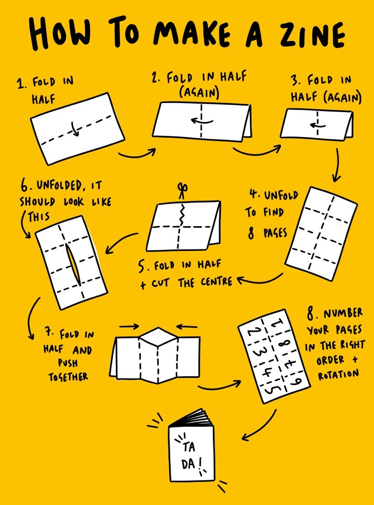

ABOUT THE ARCHIVE
In recent years, I have become really interested in personal publications like zines, blogs, and other art publication ventures. I made this space to compile zines that inspire me, that I have personally made, and that relate to my life right now.

WHAT IS A ZINE?
A zine (pronounced "ZEEN") is a DIY publication based on art, activism, consciousness-raising, and self-expression.
Here's a link resources on how to make zines